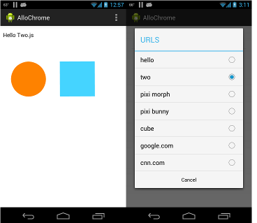
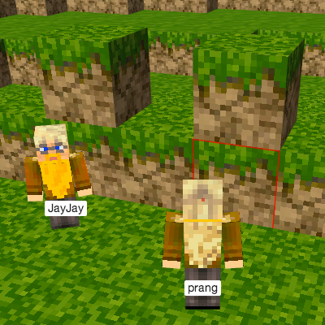
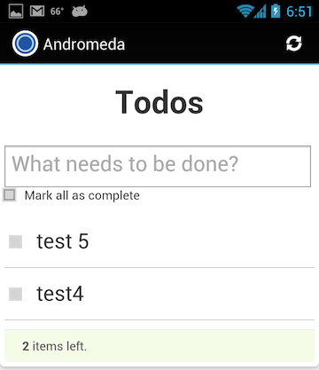

Software Projects
AlloChrome

AlloChrome is a test of ChromeView, an embedded version of Chromium. The app tests how well/if this embedded Chrome can render simple web pages using two.js, three.js, and pixi.
voxel-label

Voxel-label is a voxeljs module that implements LabelPlugin, a three.js plugin that adds labels to your game players (avatars). It can work in single-player mode as well as with voxel-client for labelling all avatars in a multiplayer game.
voxel-app-server
voxel-app-server is an extended implementation of voxel server, which is a multiplayer server for voxel-engine. voxel-app-server implements a voxeljs game using express (specifically express3), with user registration and authentication via everyauth.
Andromeda

Andromeda demonstrates how to manage the user registration and management process using Syncpoint-Android. It is a demo of TouchDB-Android and Syncpoint-Android using Apache Cordova (formerly PhoneGap), Couchapp, TodoMVC, and ActionBarSherlock. It is an extension of Android-TouchDB-Cordova, which is a demonstration of the TodoMVC backbone-require app, which has been modified to work as a Backbone boilerplate project. It is based upon Android-Couchbase-Callback.
Coconut

Coconut renders JSON defined forms in a browser and then saves the results to CouchDB. Coconut uses CouchDB for data storage and synchronization, Backbone.js for MVC, backbone-couchdb to connect backbone to CouchDB, and D3 for charts.
Coconut can be run on a computer or installed on a mobile phone or tablet. Android-Coconut-MobileFuton is an example that may be used on an Android 10.1” tablet. Android-Tims-MobileFuton is formatted for Android smart phones.
Olutindo is an Android app based on Coconut and deployed in Uganda.